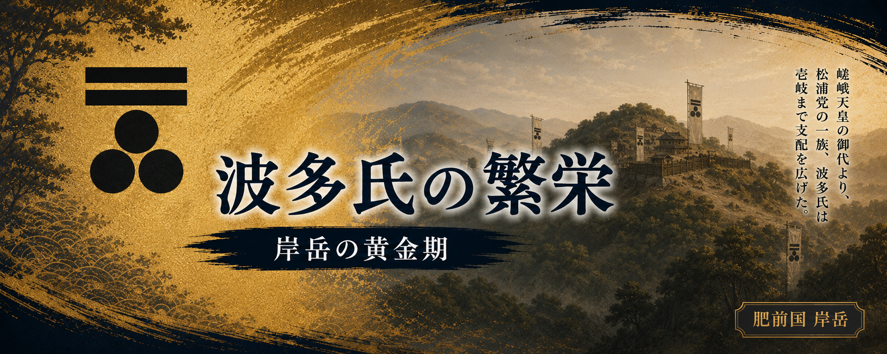

松浦党が各地へ広がる中、その中でも大きな力を持つ一族へ成長したのが波多氏でした。
波多氏は岸岳を拠点として勢力を広げ、松浦地方を代表する武士団の一つとなっていきます。
時代が鎌倉から室町、そして戦国へ移る中で、
松浦の地では一族同士の結びつきや争いが繰り返されました。
その中で波多氏は、海と陸の両方を支配する力を持ち、
上松浦党の中心的な存在へと成長していきます。
歴代の当主たちは、周辺地域への勢力拡大や戦いを重ねながら、
岸岳を中心とした領国を築き上げました。
その力はやがて、九州北西部において大きな勢力へと成長し、松浦地方を代表する一族となっていきます。
ここでは、波多氏がどのように生まれ、
どの当主たちの時代に発展し、最盛期を迎えたのかをたどります。
松浦党の祖とされる源久（松浦久）の子孫は、
松浦地方の各地へ広がり、
それぞれの土地を基盤として一族を形成していきました。
その中で、源久の二男と伝えられる人物が波多源次郎持です。
持は波多の地を受け継ぎ、後に「波多氏」と呼ばれる一族の祖となりました。
平安時代後期、武士たちは自分たちの土地を守るため、
一族の結びつきを強め、拠点となる場所を築いていきました。
波多氏もまた、波多の地を中心に勢力の基盤を整え、
後の発展につながる土台を作っていきます。
波多氏の拠点となったのが岸岳でした。
岸岳は後の時代に波多氏の本拠として発展し、
約４００年にわたり一族の歴史を刻む場所となります。
ただし、現在残るような大規模な山城としての姿が整えられた時期については、
後世の発展によるものと考えられています。
１１５６年、朝廷内部の争いから保元の乱が起こると、
各地の武士が戦いに参加しました。
波多源次郎持もこの戦いに加わり、
戦死したと伝えられています。
初代当主の時代は短いものでしたが、
波多持が築いた一族の基盤は、その後の当主へ受け継がれていきます。
続く二代源太親、三代源三郎至の時代については詳しい記録は多く残されていませんが、
波多氏は岸岳を中心とする土地支配を続け、次第に松浦地方で力を持つ一族へ成長していきました。
・『岸岳城跡Ⅰ』
波多氏の成立、岸岳城、歴代当主について。
・『肥前松浦一族』（外山幹夫）
松浦一族と波多氏の系譜。
・波多氏系図資料
歴代当主の整理。
※波多氏初期の系譜や事績には伝承による部分があります。
本章では系図・郷土資料をもとに、伝えられている流れとして紹介しています。
波多源次郎持から始まった波多氏は、
岸岳を中心とする土地を受け継ぎながら、代を重ねていきました。
そして鎌倉時代後期、九州の武士たちは日本の歴史を揺るがす大きな戦いに巻き込まれます。
１２７４年、元軍が日本へ侵攻した「文永の役」
さらに１２８１年には「弘安の役」が起こり、
九州北部の武士たちは海から迫る敵を迎え撃つことになります。
この頃の松浦地方は、海を渡る航路の重要な場所でした。
松浦党の武士たちは海に慣れた一族であり、
船を操る力や海上での戦いの経験を持っていました。
波多氏でも、第四代当主とされる太郎勇がこの戦いに参加し、
姪浜付近を守って戦功をあげたと伝えられています。
元軍との戦いは、それまでの武士同士の争いとは違い、
海を越えてやって来る大軍との戦いでした。
元寇を経験したことで、九州の武士たちは、
それぞれの土地を守るだけではなく、
海を意識した軍事力を持つ必要性を強く感じるようになります。
松浦党の一族である波多氏もまた、
この時代を通じて武士団としての存在感を高めていきました。
その後、鎌倉幕府が終わり、時代は南北朝の動乱へ向かいます。
波多氏は新たな時代の争いの中でも、
岸岳を拠点とする一族として歴史の中に登場していくことになります。
・『岸岳城跡Ⅰ』
波多氏歴代当主、元寇期の記録について。
・『肥前松浦一族』（外山幹夫）
松浦一族と元寇時代の動向。
・波多氏系図資料
第四代太郎勇の事績。
※太郎勇の元寇での働きについては、
系図・郷土資料に伝えられる内容をもとにしています。
元寇を経験した後、時代は鎌倉幕府の終わりを迎え、
日本各地で新たな争いが起こる時代へ入ります。
南北朝の動乱では、九州でも多くの武士がそれぞれの立場で戦いました。
波多氏もまた、岸岳を拠点とする松浦一族の一つとして、
この激動の時代を生き抜いていきます。
この頃の松浦党は一つの大名のような組織ではなく、
それぞれの土地を持つ武士たちが結びついた連合体でした。
五代当主とされる源三郎繁の時代には、
足利方との関係を持ちながら、
九州の動乱の中で勢力を保ったと伝えられています。
続く六代源二太夫重は、１３３８年に上洛し、
足利直義に忠勤を誓ったと伝えられています。
そして１４世紀中頃になると、
波多氏の名は史料の中にも登場するようになります。
観応２年（１３５１年）の有浦文書には、
「松浦波多源蔵人」と名乗る人物の軍忠状が残されています。
これは、波多氏が松浦地方の武士として活動していたことを示す史料です。
また、この時代には長者原の戦いが起こり、
七代源太夫照は菊池武光軍との戦いで戦死したと伝えられています。
照には跡継ぎがなく、その後、相神浦から養子として丹後守直を迎え、
波多氏の家系は受け継がれていきました。
南北朝から室町時代へ向かう中で、
波多氏は多くの戦いを経験しながらも岸岳を中心とする基盤を守り続けました。
やがて波多氏は、上松浦党を構成する有力な一族として、
松浦地方でさらに存在感を高めていくことになります。
・『岸岳城跡Ⅰ』
波多氏歴代当主、南北朝期の動向について。
・有浦文書（軍忠状）観応2年（1351年）
「松浦波多源蔵人披申 筑後国床河合戦軍忠事」
・『肥前松浦一族』（外山幹夫）
松浦党と各氏族の展開。
※南北朝期の一部の人物・合戦については、
系図や郷土資料に伝えられる内容を含みます。
南北朝の動乱を乗り越えた波多氏は、
室町時代に入ると松浦地方の有力な武士団として成長していきました。
この時代、松浦党の力の源となったのは土地だけではありませんでした。
海を舞台とした活動も、重要な力となっていきます。
松浦地方は古くから大陸や朝鮮半島と向き合う場所にあり、
海上交通の重要な地域でした。
松浦党の武士たちは船を操る技術を持ち、
海を通じた交流や交易にも関わっていきます。
１４００年代中頃、波多氏の名は朝鮮側の史料にも登場します。
『海東諸国記』には、
乙亥年（１４５５年）に
「肥前州上松浦波多島 源約」
という人物の来朝記事が記されています。
さらに戌子年（１４６８年）には、
「肥前州上松浦波多下野守 源泰」
の名が記され、
波多氏が朝鮮との交渉を行う存在であったことが分かります。
この頃の波多氏は、岸岳を中心とした領地支配だけではなく、
海を通じた外交や交易にも関わる一族へ成長していました。
１４代当主とされる下野守泰の時代は、
波多氏が大きく飛躍した時代だったと考えられます。
また、この時代には壱岐への進出も進み、
波多氏の勢力は松浦地方だけでなく、
海を越えた地域へ広がっていきました。
陸の武士でありながら、海の力も持つ。
それが後の波多氏の繁栄を支える大きな特徴となります。
武力だけではなく、海上交流や領内支配、文化の発展によって、
波多氏は松浦地方を代表する戦国領主へ成長していきました。
岸岳を中心に、松浦の地から壱岐へも勢力を広げた波多氏は、
この時代に最も大きな力を持つ時期を迎えます。
・『海東諸国記』
１４５５年「肥前州上松浦波多島 源約」来朝記事。
・『海東諸国記』
１４６８年「肥前州上松浦波多下野守 源泰」来朝記事。
・李朝世祖実録（朴瑞生報告）
松浦地方の海上勢力に関する記録。
・『岸岳城跡Ⅰ』
波多氏の歴代と勢力展開について。
※朝鮮側史料に登場する「波多」は、
当時の松浦地域の海上勢力・外交関係を示す資料として扱っています。
室町時代後期になると、波多氏は上松浦党の中でも中心的な存在となり、
岸岳を本拠として大きな勢力を持つようになりました。
１４代当主とされる下野守泰の時代には、
朝鮮との交流や壱岐への進出などを通じて、
波多氏の勢力はさらに広がっていきます。
その後を継いだ１５代下野守興の時代には、
波多氏の支配体制はさらに整えられていきました。
天文４年（１５３５年）の「御触出之状」では、
武士だけでなく百姓・町家・寺社にも関わる規定が示され、
岸岳周辺を治める領主としての姿が見えてきます。
また、この頃の岸岳周辺では、
後に唐津焼へつながる陶器生産も発展しました。
岸岳八窯は古唐津の始まりを考える上で重要な窯跡群として知られています。
ただし、唐津焼の起源については現在も研究が続いており、
岸岳だけを唯一の始まりとするものではありません。
武士団として始まった波多氏は、
長い年月をかけて松浦地方を治める領主へと成長しました。
岸岳を中心とした勢力はこの時代に最盛期を迎えます。
しかし、その繁栄の中で一族内部には次第に問題が生じ、
やがて波多氏の運命を大きく変える時代へ向かうことになります。
・『岸岳城跡Ⅰ』
波多氏の歴代当主、岸岳城、戦国期の勢力について。
・『肥前松浦一族』（外山幹夫）
松浦一族と波多氏の系譜、勢力展開について。
・『海東諸国記』
１４５５年「肥前州上松浦波多島 源約」、
１４６８年「肥前州上松浦波多下野守 源泰」の記録。
・「御触出之状」天文４年（１５３５年）
波多氏領内の統治、家中・領民への規定について。
・唐津焼・岸岳八窯関係資料
岸岳周辺の古窯と古唐津の成立について。
※岸岳八窯と唐津焼の起源については、
現在も研究が続いており諸説あります。
本章では波多氏の時代背景として紹介しています。